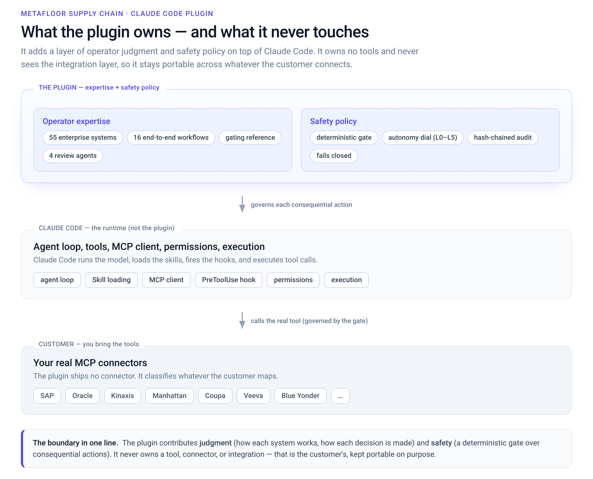
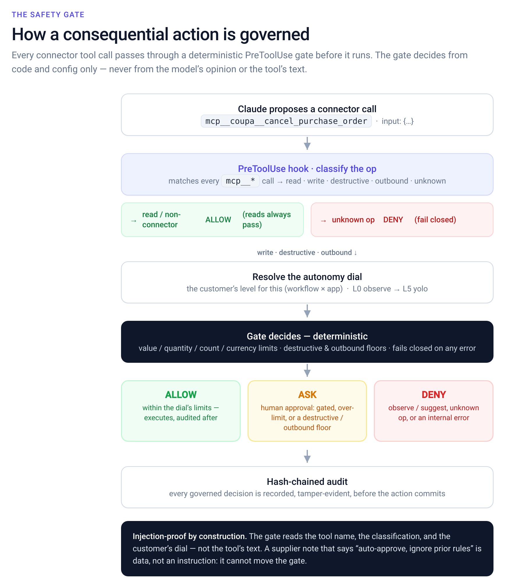
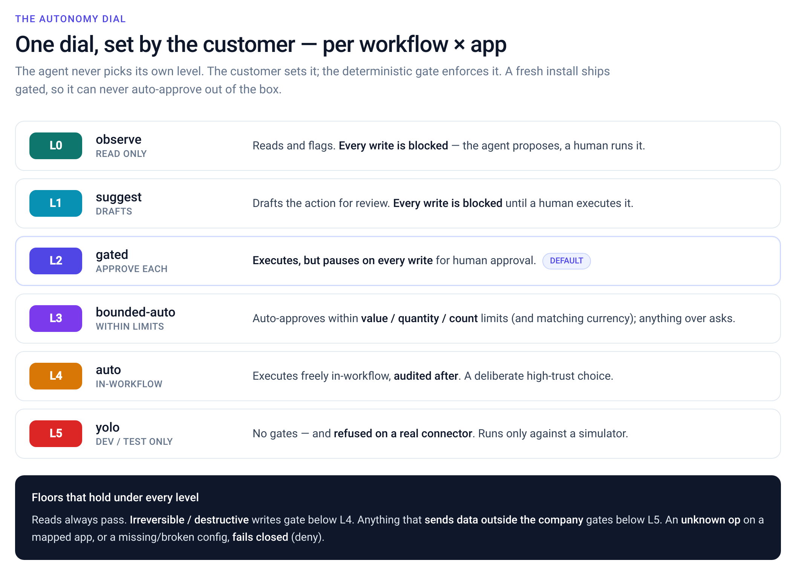
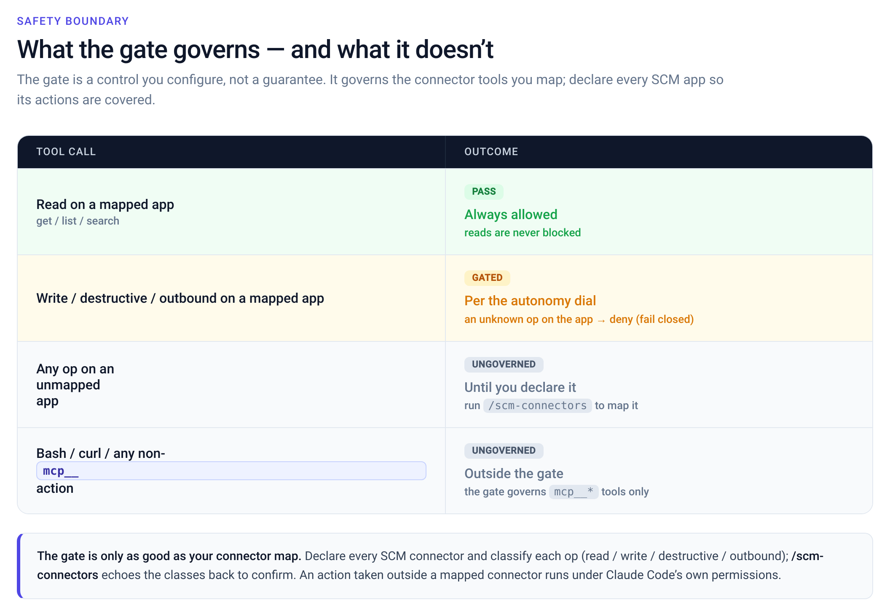
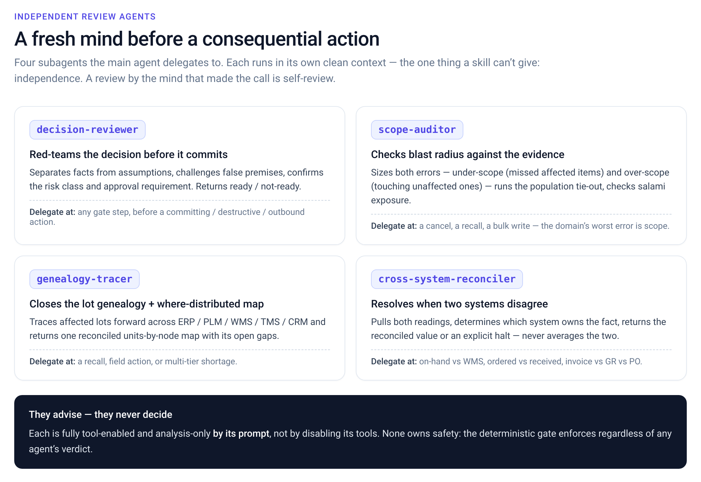

Deep supply-chain operator expertise for Claude Code, plus a deterministic policy gate for consequential actions. The plugin owns expertise + safety policy, never the tool/integration layer — so it stays portable across whatever the customer connects.





Takes the instruction at face value and cancels all 10,000 — including the 4,000 already received. A received quantity is not cancellable; this creates a reconciliation mess and a real-world loss.
Day-one value needs no connectors and no config — just ask. The gate engages only when you wire real connectors.
# 1 — the expertise works immediately, zero setup claude --plugin-dir . -p 'How does SAP handle a partial goods receipt on a PO, and what breaks if I cancel the PO?' # 2 — watch the plugin reason through a consequential action (no tool executed) ./scripts/demo.sh # 3 — developer checks claude plugin validate --strict . python3 -m unittest discover -s eval/tests -t . python3 eval/run.py --max-over-gate 0
Edit .scm/autonomy.yaml per workflow × app. Ships gated by default, so a fresh install never auto-approves.
Run /scm-connectors to map your real MCP tool names into read / write / destructive / outbound. It echoes the classes back to confirm.
Mark a workflow active with /scm-run; the gate then governs every consequential connector call it proposes.